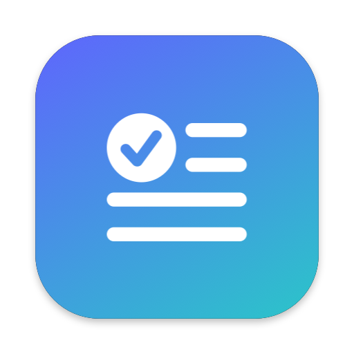

⌘1
Correct
Lexa corrects the grammar, spelling, and punctuation. It makes only the necessary changes.

LexaSelect text. Press ⌥⌘G. Lexa corrects the text and shows the changes.
Use a free LLM, a local model, or your ChatGPT or Claude subscription.
brew install --cask sasuke40/tap/lexa
The model results in the video are examples from a local test server.
Use Mail, Notes, Slack, a web browser, or a different app.
Lexa shows the result in a small window. The changed words have colors.
Lexa replaces the selected text. Then Lexa puts your clipboard back.
Lexa corrects the grammar, spelling, and punctuation. It makes only the necessary changes.
Lexa writes the text again in ASD-STE100 Simplified Technical English: short sentences, the active voice, and approved words.
Lexa changes the text to a Formal, Friendly, Short, or Confident tone.
Lexa translates the text into one of 15 languages and keeps the format.
Your text stays on your Mac.
Lexa uses the newest model of your plan. Lexa does not read the credentials of the CLI.
Lexa sends your text only to the provider that you select.
Lexa keeps API keys and tokens in the macOS Keychain.
Lexa finds new versions and installs them with one click.
A native menu bar app with Liquid Glass. It has no Dock icon.
brew install --cask sasuke40/tap/lexa
Apple did not notarize Lexa. When you open Lexa for the first time, go to System Settings → Privacy & Security. Then click “Open Anyway”.